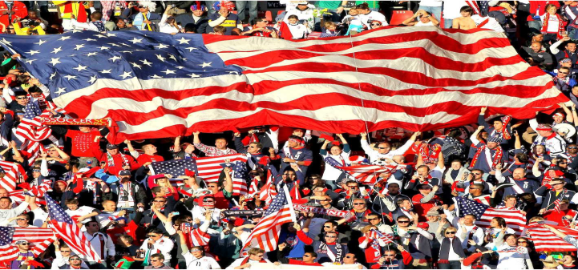
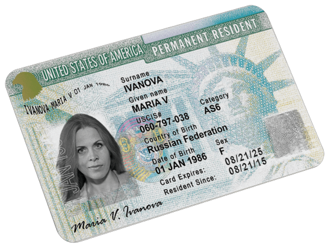

«Американская мечта — идеал свободы или возможностей, который был сформулирован «отцами-основателями»; духовная мощь нации. Если американская система — это скелет американской политики, то американская мечта — её душа».
© «Политический словарь» Уильяма Сефайра
Американская мечта (англ. American Dream) — выражение, часто употребляемое для обозначения жизненных идеалов жителей США как в материальном, так и в духовном смысле.
Источником словосочетания «американская мечта» считается написанный в период Великой Депрессии1 исторический трактат Джеймса Адамса, озаглавленный «Эпос Америки». Джеймс Адамс хотел ободрить соотечественников, напомнить им о предназначении Америки и её достижениях, в результате чего это выражение прижилось и используется по сей день. Большую роль в формирование американской мечты сыграла протестантская религия и протестантская трудовая этика. Протестантизм, который является доминирующей религией в США, проповедует усердие для достижения целей и добросовестный и честный труд. Увеличение благосостояния человека, который трудится честно считается также благом.
1 Великая депрессия (англ. Great Depression) — мировой экономический кризис, начавшийся в 1929 году и продолжавшийся до 1939 года.
Понятие «американской мечты» часто связывают с иммигрантами, прибывшими в США в поисках лучшей жизни. То обстоятельство, что они уезжали из стран, где, в отличие от США, была достаточно жёсткая сословная система, ограничивавшая социальную мобильность, определило их приверженность философии свободы личности и свободного предпринимательства. Понятие американской мечты тесно связано с понятием «self-made person», то есть человека, который своим упорным трудом добился успеха в жизни.
1. Равенство всех перед законом.
2. Почитание общих для всех американцев символов, образцов и героев.
3. Свобода личности.
4. Свобода предпринимательства.
5. Свобода самовыражения.
6. Труд во благо для достижения успеха.
7. Повышение репутации и роли в обществе.
8. Уважение сограждан.
9. Социальная ответственность.
Свое отражение, американская мечта, получила и в законодательстве США. Так, Декларация независимости США говорит, что: "жизнь каждого должна быть лучше, богаче и полнее, с возможностями для каждого в соответствии с его способностями или достижениями — независимо от социального класса или обстоятельств рождения".
Выражение американская мечта понимается как общественно социальная для США доктрина (идеология), которая объединяет проживающих в США жителей в поиске счастья и благосостояния. В основе этой идеологии лежит вера, что любое проживающее в Соединенных Штатах Америки лицо, реализуя свою энергию и трудолюбие, может достичь успеха в жизни и стать обеспеченным членом общества. Практически каждый новый Президент США в своей инаугурационной речи отмечает, что при нем каждый американец станет ближе к своей американской мечте. По мнению некоторых скептиков, идеологию американской мечты можно считать социальной утопией, однако она в дальнейшем остается одной из главных движущих сил миграции в США.
1. Выиграть грин-карту.
Грин-карта — это удостоверение, которое дает право жить и работать в США. Ежегодно Штаты проводят лотерею, в которой разыгрывают 55 тысяч грин-карт. Участвовать могут все образованные или работающие жители стран с низким уровнем иммиграции в США. Для этого нужно заполнить анкету на сайте американского правительства и ждать, когда компьютер выберет победителей. Если вдруг вам повезло (шанс выиграть грин-карту — примерно 1 из 200), то вам нужно будет заполнить анкеты, пройти медкомиссию, собрать огромный пакет документов и потом прийти на собеседование в Посольство США. Если все пройдет хорошо, то можно будет распродавать имущество и уезжать в Америку.
2. Получить приглашение на работу.
Если вы убедите какую-нибудь американскую компанию, что ей нужен такой работник как вы, то с ее помощью вы сможете оформить себе рабочую визу. Есть два типа рабочих виз — Н1В и L1. Виза Н1В выдается квалифицированным работникам сроком на 3 года. Но на них есть лимит — в год их могут оформить только 65 тысяч человек. Документы на визу за вас подаст работодатель, при этом он должен доказать, что он не смог найти на обещанную вам должность подходящего американца. Виза L1 выдается менеджерам высшего звена, которые хотят открыть представительство своей компании в США. Если у вас есть своя компания с хорошим годовым оборотом и как минимум с тремя наемными работниками, то у вас есть все шансы ее получить. Для этого вам нужно будет собрать огромный пакет документов, переехать в США, сделать филиал прибыльным, и тогда можно будет подавать на продление рабочей визы или получение грин-карты
3. Быть геем.
Если вы гей и вас притесняют, то вы можете попросить США о предоставлении убежища. Для этого вам нужно будет приехать в США по обычной туристической визе и подать соответствующее заявление в Службу гражданства и иммиграции. При этом вам нужно будет доказать, что в родной стране вы подвергались преследованиям или можете подвергнуться им в будущем. В качестве доказательств подойдут документированные описания случаев насилия, избиений и убийств геев и трансгендеров. После подачи заявления вас вызовут на интервью, и в зависимости от его исхода разрешат вам остаться в США или отправят домой.
4. Быть талантливым.
Если вы выдающийся спортсмен, музыкант, ученый, писатель, танцор или бизнесмен, то вы можете претендовать на визу О1. Это еще один тип рабочей визы, поэтому подавать заявление на нее должен американец, который хочет нанять вас на работу или продвигать ваш талант. Вам нужно будет предоставить все свидетельства своего таланта — грамоты, дипломы, записанные альбомы, картины, записи с концертов и все остальное, что сможет подтвердить ваш талант. Рассмотрение заявки занимает несколько месяцев.
5. Получить политическое убежище.
Как и в случае с гей-иммиграцией, для получения убежища вам нужно будет доказать, что вашему благополучию на родине что-то угрожает. Нужно будет указать, кто именно вас притесняет — само государство или просто злые люди, от которых полиция отказывается вас защищать. Для подачи заявления подойдут случаи преследования из-за политических взглядов, религиозных убеждений, национальной принадлежности или принадлежности к какой-либо социальной группе. После подачи заявки Служба гражданства и иммиграции все тщательно проверит и потом сообщит вам о своем решении.
6. Выйти замуж или жениться.
Вы можете заключить фиктивный брак с гражданином Америки и подать прошение о грин-карте. Есть даже специальные посредники, которые за определенную сумму запросто найдут вам пару. Но на интервью перед оформлением грин-карты вам нужно будет доказать, что ваш брак — настоящий. Вы должны жить вместе, рассказывать одни и те же истории про совместный отпуск, ездить в гости к родителям друг друга, иметь общие счета, общих друзей и кучу совместных фотографий. В случае, если фиктивность брака раскроется, то вас ждет пять лет тюрьмы или огромный штраф. Также при поиске фиктивного возлюбленного есть большой шанс нарваться на мошенников, которые бросят вас на деньги или начнут шантажировать. Поэтому лучший вариант — выйти за американца или жениться на американке по любви.
7. Пережить «физические и психологические потрясения».
Чтобы осесть в Америке, можно попробовать оформить визу категории U — ее также называют «визой пострадавшего». Вам дадут ее в том случае, если вы стали жертвой или свидетелем серьезного преступления, совершенного на территории США. Это может быть насилие, работорговля, похищение и убийство. Суть «визы пострадавшего» в том, что Америка предоставляет вам вид на жительство в обмен на помощь в раскрытии совершенного преступления. Срок действия визы — 4 года, а к концу срока ее действия можно подать прошение на оформление грин-карты. Часто бывает так, что нелегалы платят кому-нибудь за то, чтобы тот специально пырнул их ножом на камеру. Если вы решите пойти по тому же пути, то вам придется обзавестись хорошим адвокатом, который сможет доказать в суде, что вы не мошенник.

8. Стать студентом.
Студенческая виза называется F1. Ее можно получить для обучения в университетах США или на языковых курсах. Чтобы ее оформить, помимо стандартных документов вам нужно будет собрать все ваши дипломы, сертификаты о сдаче экзаменов, приглашение из вуза, переписку с научным руководителем и разные научные публикации. На собеседовании в посольстве вы должны будете убедить интервьюера в том, что вы действительно жаждете учиться, а после учебы с удовольствием вернетесь на родину, чтобы применить полученные знания на практике.
9. Инвестировать в американский бизнес.
Право жить и работать в США дает виза EB-5. Ее дают предпринимателям, которые решают инвестировать деньги в бизнес США. Необходимая сумма инвестиций рассчитывается в зависимости от местонахождения и типа компании. В среднем она должна составлять 1 млн долларов, но она может сократиться в два раза, если вы вкладывается в слаборазвитые и малонаселенные регионы. Ваше вложение должно создать 10 новых рабочих мест как минимум на 2 года.
СПАСИБО
ЗА
ВНИМАНИЕ!
Работу выполнили:
Негров Юрий
Красновский Даниил
Закирова Рината
Любавин Артём